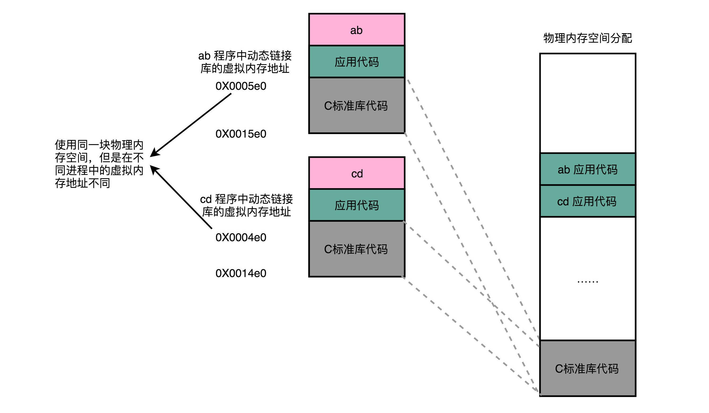
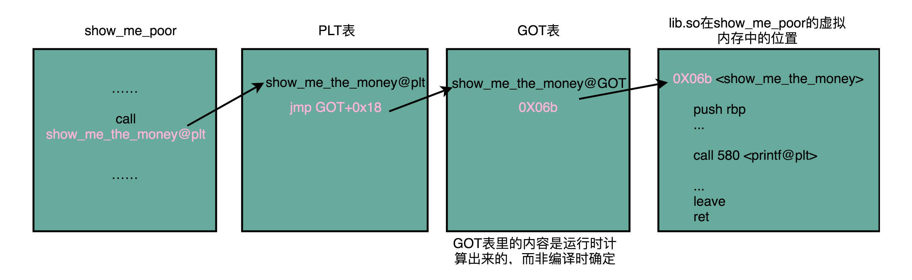

- 00 开篇词 为什么你需要学习计算机组成原理？.md.html
- 01 冯·诺依曼体系结构：计算机组成的金字塔.md.html
- 02 给你一张知识地图，计算机组成原理应该这么学.md.html
- 03 通过你的CPU主频，我们来谈谈“性能”究竟是什么？.md.html
- 04 穿越功耗墙，我们该从哪些方面提升“性能”？.md.html
- 05 计算机指令：让我们试试用纸带编程.md.html
- 06 指令跳转：原来if...else就是goto.md.html
- 07 函数调用：为什么会发生stack overflow？.md.html
- 08 ELF和静态链接：为什么程序无法同时在Linux和Windows下运行？.md.html
- 09 程序装载：“640K内存”真的不够用么？.md.html
- 10 动态链接：程序内部的“共享单车”.md.html
- 11 二进制编码：“手持两把锟斤拷，口中疾呼烫烫烫”？.md.html
- 12 理解电路：从电报机到门电路，我们如何做到“千里传信”？.md.html
- 13 加法器：如何像搭乐高一样搭电路（上）？.md.html
- 14 乘法器：如何像搭乐高一样搭电路（下）？.md.html
- 15 浮点数和定点数（上）：怎么用有限的Bit表示尽可能多的信息？.md.html
- 16 浮点数和定点数（下）：深入理解浮点数到底有什么用？.md.html
- 17 建立数据通路（上）：指令加运算=CPU.md.html
- 18 建立数据通路（中）：指令加运算=CPU.md.html
- 19 建立数据通路（下）：指令加运算=CPU.md.html
- 20 面向流水线的指令设计（上）：一心多用的现代CPU.md.html
- 21 面向流水线的指令设计（下）：奔腾4是怎么失败的？.md.html
- 22 冒险和预测（一）：hazard是“危”也是“机”.md.html
- 23 冒险和预测（二）：流水线里的接力赛.md.html
- 24 冒险和预测（三）：CPU里的“线程池”.md.html
- 25 冒险和预测（四）：今天下雨了，明天还会下雨么？.md.html
- 26 Superscalar和VLIW：如何让CPU的吞吐率超过1？.md.html
- 27 SIMD：如何加速矩阵乘法？.md.html
- 28 异常和中断：程序出错了怎么办？.md.html
- 29 CISC和RISC：为什么手机芯片都是ARM？.md.html
- 30 GPU（上）：为什么玩游戏需要使用GPU？.md.html
- 31 GPU（下）：为什么深度学习需要使用GPU？.md.html
- 32 FPGA、ASIC和TPU（上）：计算机体系结构的黄金时代.md.html
- 33 解读TPU：设计和拆解一块ASIC芯片.md.html
- 34 理解虚拟机：你在云上拿到的计算机是什么样的？.md.html
- 35 存储器层次结构全景：数据存储的大金字塔长什么样？.md.html
- 36 局部性原理：数据库性能跟不上，加个缓存就好了？.md.html
- 37 理解CPU Cache（上）：“4毫秒”究竟值多少钱？.md.html
- 38 高速缓存（下）：你确定你的数据更新了么？.md.html
- 39 MESI协议：如何让多核CPU的高速缓存保持一致？.md.html
- 40 理解内存（上）：虚拟内存和内存保护是什么？.md.html
- 41 理解内存（下）：解析TLB和内存保护.md.html
- 42 总线：计算机内部的高速公路.md.html
- 43 输入输出设备：我们并不是只能用灯泡显示“0”和“1”.md.html
- 44 理解IO_WAIT：IO性能到底是怎么回事儿？.md.html
- 45 机械硬盘：Google早期用过的“黑科技”.md.html
- 46 SSD硬盘（上）：如何完成性能优化的KPI？.md.html
- 47 SSD硬盘（下）：如何完成性能优化的KPI？.md.html
- 48 DMA：为什么Kafka这么快？.md.html
- 49 数据完整性（上）：硬件坏了怎么办？.md.html
- 50 数据完整性（下）：如何还原犯罪现场？.md.html
- 51 分布式计算：如果所有人的大脑都联网会怎样？.md.html
- 52 设计大型DMP系统（上）：MongoDB并不是什么灵丹妙药.md.html
- 53 设计大型DMP系统（下）：SSD拯救了所有的DBA.md.html
- 54 理解Disruptor（上）：带你体会CPU高速缓存的风驰电掣.md.html
- 55 理解Disruptor（下）：不需要换挡和踩刹车的CPU，有多快？.md.html
- 结束语 知也无涯，愿你也享受发现的乐趣.md.html
- 捐赠
10 动态链接：程序内部的“共享单车”
我们之前讲过，程序的链接，是把对应的不同文件内的代码段，合并到一起，成为最后的可执行文件。这个链接的方式，让我们在写代码的时候做到了“复用”。同样的功能代码只要写一次，然后提供给很多不同的程序进行链接就行了。
这么说来，“链接”其实有点儿像我们日常生活中的标准化、模块化生产。我们有一个可以生产标准螺帽的生产线，就可以生产很多个不同的螺帽。只要需要螺帽，我们都可以通过链接的方式，去复制一个出来，放到需要的地方去，大到汽车，小到信箱。
但是，如果我们有很多个程序都要通过装载器装载到内存里面，那里面链接好的同样的功能代码，也都需要再装载一遍，再占一遍内存空间。这就好比，假设每个人都有骑自行车的需要，那我们给每个人都生产一辆自行车带在身边，固然大家都有自行车用了，但是马路上肯定会特别拥挤。

链接可以分动、静，共享运行省内存
我们上一节解决程序装载到内存的时候，讲了很多方法。说起来，最根本的问题其实就是内存空间不够用。如果我们能够让同样功能的代码，在不同的程序里面，不需要各占一份内存空间，那该有多好啊！就好比，现在马路上的共享单车，我们并不需要给每个人都造一辆自行车，只要马路上有这些单车，谁需要的时候，直接通过手机扫码，都可以解锁骑行。
这个思路就引入一种新的链接方法，叫作动态链接（Dynamic Link）。相应的，我们之前说的合并代码段的方法，就是静态链接（Static Link）。
在动态链接的过程中，我们想要“链接”的，不是存储在硬盘上的目标文件代码，而是加载到内存中的共享库（Shared Libraries）。顾名思义，这里的共享库重在“共享“这两个字。
这个加载到内存中的共享库会被很多个程序的指令调用到。在 Windows 下，这些共享库文件就是.dll 文件，也就是 Dynamic-Link Libary（DLL，动态链接库）。在 Linux 下，这些共享库文件就是.so 文件，也就是 Shared Object（一般我们也称之为动态链接库）。这两大操作系统下的文件名后缀，一个用了“动态链接”的意思，另一个用了“共享”的意思，正好覆盖了两方面的含义。

地址无关很重要，相对地址解烦恼
不过，要想要在程序运行的时候共享代码，也有一定的要求，就是这些机器码必须是“地址无关”的。也就是说，我们编译出来的共享库文件的指令代码，是地址无关码（Position-Independent Code）。换句话说就是，这段代码，无论加载在哪个内存地址，都能够正常执行。如果不是这样的代码，就是地址相关的代码。
如果还不明白，我给你举一个生活中的例子。如果我们有一个骑自行车的程序，要“前进 500 米，左转进入天安门广场，再前进 500 米”。它在 500 米之后要到天安门广场了，这就是地址相关的。如果程序是“前进 500 米，左转，再前进 500 米”，无论你在哪里都可以骑车走这 1000 米，没有具体地点的限制，这就是地址无关的。
你可以想想，大部分函数库其实都可以做到地址无关，因为它们都接受特定的输入，进行确定的操作，然后给出返回结果就好了。无论是实现一个向量加法，还是实现一个打印的函数，这些代码逻辑和输入的数据在内存里面的位置并不重要。
而常见的地址相关的代码，比如绝对地址代码（Absolute Code）、利用重定位表的代码等等，都是地址相关的代码。你回想一下我们之前讲过的重定位表。在程序链接的时候，我们就把函数调用后要跳转访问的地址确定下来了，这意味着，如果这个函数加载到一个不同的内存地址，跳转就会失败。

对于所有动态链接共享库的程序来讲，虽然我们的共享库用的都是同一段物理内存地址，但是在不同的应用程序里，它所在的虚拟内存地址是不同的。我们没办法、也不应该要求动态链接同一个共享库的不同程序，必须把这个共享库所使用的虚拟内存地址变成一致。如果这样的话，我们写的程序就必须明确地知道内部的内存地址分配。
那么问题来了，我们要怎么样才能做到，动态共享库编译出来的代码指令，都是地址无关码呢？
动态代码库内部的变量和函数调用都很容易解决，我们只需要使用相对地址（Relative Address）就好了。各种指令中使用到的内存地址，给出的不是一个绝对的地址空间，而是一个相对于当前指令偏移量的内存地址。因为整个共享库是放在一段连续的虚拟内存地址中的，无论装载到哪一段地址，不同指令之间的相对地址都是不变的。
PLT 和 GOT，动态链接的解决方案
要实现动态链接共享库，也并不困难，和前面的静态链接里的符号表和重定向表类似，还是和前面一样，我们还是拿出一小段代码来看一看。
首先，lib.h 定义了动态链接库的一个函数 show_me_the_money。
// lib.h
#ifndef LIB_H
#define LIB_H
void show_me_the_money(int money);
#endif
lib.c 包含了 lib.h 的实际实现。
// lib.c
#include <stdio.h>
void show_me_the_money(int money)
{
printf("Show me USD %d from lib.c \n", money);
}
然后，show_me_poor.c 调用了 lib 里面的函数。
// show_me_poor.c
#include "lib.h"
int main()
{
int money = 5;
show_me_the_money(money);
}
最后，我们把 lib.c 编译成了一个动态链接库，也就是 .so 文件。
$ gcc lib.c -fPIC -shared -o lib.so
$ gcc -o show_me_poor show_me_poor.c ./lib.so
你可以看到，在编译的过程中，我们指定了一个 -fPIC 的参数。这个参数其实就是 Position Independent Code 的意思，也就是我们要把这个编译成一个地址无关代码。
然后，我们再通过 gcc 编译 show_me_poor 动态链接了 lib.so 的可执行文件。在这些操作都完成了之后，我们把 show_me_poor 这个文件通过 objdump 出来看一下。
$ objdump -d -M intel -S show_me_poor
复制代码
……
0000000000400540 <show_me_the_money@plt-0x10>:
400540: ff 35 12 05 20 00 push QWORD PTR [rip+0x200512] # 600a58 <_GLOBAL_OFFSET_TABLE_+0x8>
400546: ff 25 14 05 20 00 jmp QWORD PTR [rip+0x200514] # 600a60 <_GLOBAL_OFFSET_TABLE_+0x10>
40054c: 0f 1f 40 00 nop DWORD PTR [rax+0x0]
0000000000400550 <show_me_the_money@plt>:
400550: ff 25 12 05 20 00 jmp QWORD PTR [rip+0x200512] # 600a68 <_GLOBAL_OFFSET_TABLE_+0x18>
400556: 68 00 00 00 00 push 0x0
40055b: e9 e0 ff ff ff jmp 400540 <_init+0x28>
……
0000000000400676 <main>:
400676: 55 push rbp
400677: 48 89 e5 mov rbp,rsp
40067a: 48 83 ec 10 sub rsp,0x10
40067e: c7 45 fc 05 00 00 00 mov DWORD PTR [rbp-0x4],0x5
400685: 8b 45 fc mov eax,DWORD PTR [rbp-0x4]
400688: 89 c7 mov edi,eax
40068a: e8 c1 fe ff ff call 400550 <show_me_the_money@plt>
40068f: c9 leave
400690: c3 ret
400691: 66 2e 0f 1f 84 00 00 nop WORD PTR cs:[rax+rax*1+0x0]
400698: 00 00 00
40069b: 0f 1f 44 00 00 nop DWORD PTR [rax+rax*1+0x0]
……
我们还是只关心整个可执行文件中的一小部分内容。你应该可以看到，在 main 函数调用 show_me_the_money 的函数的时候，对应的代码是这样的：
call 400550 <show_me_the_money@plt>
复制代码
这里后面有一个 @plt 的关键字，代表了我们需要从 PLT，也就是程序链接表（Procedure Link Table）里面找要调用的函数。对应的地址呢，则是 400550 这个地址。
那当我们把目光挪到上面的 400550 这个地址，你又会看到里面进行了一次跳转，这个跳转指定的跳转地址，你可以在后面的注释里面可以看到，GLOBAL_OFFSET_TABLE+0x18。这里的 GLOBAL_OFFSET_TABLE，就是我接下来要说的全局偏移表。
400550: ff 25 12 05 20 00 jmp QWORD PTR [rip+0x200512] # 600a68 <_GLOBAL_OFFSET_TABLE_+0x18>
复制代码
在动态链接对应的共享库，我们在共享库的 data section 里面，保存了一张全局偏移表（GOT，Global Offset Table）。虽然共享库的代码部分的物理内存是共享的，但是数据部分是各个动态链接它的应用程序里面各加载一份的。所有需要引用当前共享库外部的地址的指令，都会查询 GOT，来找到当前运行程序的虚拟内存里的对应位置。而 GOT 表里的数据，则是在我们加载一个个共享库的时候写进去的。
不同的进程，调用同样的 lib.so，各自 GOT 里面指向最终加载的动态链接库里面的虚拟内存地址是不同的。
这样，虽然不同的程序调用的同样的动态库，各自的内存地址是独立的，调用的又都是同一个动态库，但是不需要去修改动态库里面的代码所使用的地址，而是各个程序各自维护好自己的 GOT，能够找到对应的动态库就好了。

我们的 GOT 表位于共享库自己的数据段里。GOT 表在内存里和对应的代码段位置之间的偏移量，始终是确定的。这样，我们的共享库就是地址无关的代码，对应的各个程序只需要在物理内存里面加载同一份代码。而我们又要通过各个可执行程序在加载时，生成的各不相同的 GOT 表，来找到它需要调用到的外部变量和函数的地址。
这是一个典型的、不修改代码，而是通过修改“地址数据”来进行关联的办法。它有点像我们在 C 语言里面用函数指针来调用对应的函数，并不是通过预先已经确定好的函数名称来调用，而是利用当时它在内存里面的动态地址来调用。
总结延伸
这一讲，我们终于在静态链接和程序装载之后，利用动态链接把我们的内存利用到了极致。同样功能的代码生成的共享库，我们只要在内存里面保留一份就好了。这样，我们不仅能够做到代码在开发阶段的复用，也能做到代码在运行阶段的复用。
实际上，在进行 Linux 下的程序开发的时候，我们一直会用到各种各样的动态链接库。C 语言的标准库就在 1MB 以上。我们撰写任何一个程序可能都需要用到这个库，常见的 Linux 服务器里，/usr/bin 下面就有上千个可执行文件。如果每一个都把标准库静态链接进来的，几 GB 乃至几十 GB 的磁盘空间一下子就用出去了。如果我们服务端的多进程应用要开上千个进程，几 GB 的内存空间也会一下子就用出去了。这个问题在过去计算机的内存较少的时候更加显著。
通过动态链接这个方式，可以说彻底解决了这个问题。就像共享单车一样，如果仔细经营，是一个很有社会价值的事情，但是如果粗暴地把它变成无限制地复制生产，给每个人造一辆，只会在系统内制造大量无用的垃圾。
过去的 05～09 这五讲里，我们已经把程序怎么从源代码变成指令、数据，并装载到内存里面，由 CPU 一条条执行下去的过程讲完了。希望你能有所收获，对于一个程序是怎么跑起来的，有了一个初步的认识。
推荐阅读
想要更加深入地了解动态链接，我推荐你可以读一读《程序员的自我修养：链接、装载和库》的第 7 章，里面深入地讲解了，动态链接里程序内的数据布局和对应数据的加载关系。
© 2019 - 2023 Liangliang Lee. Powered by gin and hexo-theme-book.